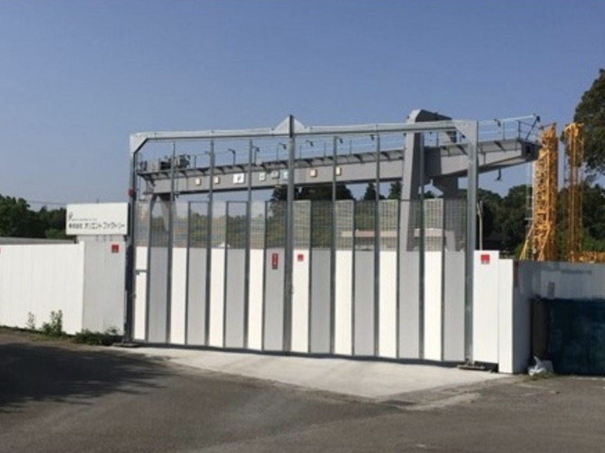

平成５年１２月事業開始。
中国との貿易業務取引の中、翌年平成６年６月に中国商社の上海進毅貿易有限公司と当社との合弁会社を中国上海に設立（東亜機械工程有限公司）。
日本国内における新車・中古車の建設機械の仕入及び輸出販売、レンタルおよび販売後のアフターメンテナンス業務を行っております。
日本国内においては同時期に建設産業機械メンテナンス業務を開始し、建設会社や建設機械リース会社との取引の中で、主としてクレーンや工事用エレベーターのメンテナンス業務を行っております。
平成２１年春より千葉市に自社工場を完備し、自社所有のクレーン・工事用エレベーター・分電盤他の電材品関係等のレンタル業務に加え、鋼材による仮設設備等の製作、重機・発電機等の一般汎用機械の修理・整備等の業務も開始。
また、ものつくり企業“株式会社北川鉄工所”の指定サービスディーラーとしてメーカーとタイアップをしながらのアフターメンテナンス業務を全国展開で行っています。

| 社名 | 株式会社 オリエントファクトリー |
|---|---|
| 所在地 | 千葉第1工場/千葉県千葉市若葉区下田町1376-4 千葉第2工場/千葉県千葉市若葉区下田町1205 |
| 連絡先 | TEL 043-239-8690 FAX 043-239-8691 |
| 設立 | 平成5年12月 |
| 従業員数 | 11人（2013年5月現在） |
| 資本金 | 10,000,000円 |
| 事業内容 | 建設建築機械の組立指導、解体指導、修理、点検、メンテナンス、販売 建設土木機械の組立指導、解体指導、修理、点検、メンテナンス、販売 建設プラント機械の組立指導、解体指導、修理、点検、メンテナンス、販売 建設建築機械の輸出、販売、リース 建設土木機械の輸出、販売、リース 建設プラント機械の輸出、販売、リース LED照明の販売、レンタル、施工 他 |
| 主要取引先 | 伊藤忠TC建機株式会社、株式会社北川鉄工所、産業リーシング株式会社、三成研機株式会社、上海沈毅貿易有限公司、株式会社昭和、株式会社竹中工務店、竹本機械工業株式会社、司建機株式会社、日本国土開発株式会社、株式会社ビルマックス、他（五十音順、敬称略） |
| 関連会社 | 東亜機械工程有限公司 |
| 加入保険 | 社会保険、労災保険、任意労災保険、事業総合賠償責任保険 |
| 建設業許可 | とび・土工工事業 千葉県知事許可（般-3）第43405号 機械器具設置工事業 千葉県知事許可（般-3）第43405号 |
| クレーン製造許可 | 25.0ｔ クラブトロリ式天井クレーン 千葉労働局許可第1196号 25.0ｔ クラブトロリ式橋型クレーン 千葉労働局許可第1066号 |
| 協賛 | 2023年1月1日から女子プロゴルファーを目指す日本ウェルネス大学ゴルフ部所属の吉澤柚月選手の協賛を開始します。帽子、ウェアに当社の社名ロゴがプリントされます。 この協賛を通じ、今後関係者の皆様と一緒に吉澤柚月選手を応援するとともに、若手育成ならびにスポーツの発展を支援していきます。 JGA日本ゴルフ協会公式ホームページ内吉澤柚月オフィシャルウェブサイトにて、吉澤 柚月選手のプロフィールが掲載されております。 http://www.jga.or.jp/jga/jsp/players/profile_36152.html |
当社では、以下の資格を取得しております。
〒265-0076 千葉県千葉市若葉区下田町1376-4
千葉都市モノレール2号線「千城台駅」より車で約4分